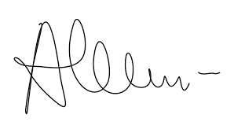

Sam John
My name is Sam John and I am a fine art photographer and film-maker based in Auckland, New Zealand. I lead a tight-knit team of brilliant creatives, Shine & Co. We capture real weddings for real couples.
A few years ago I was living in Salt Lake City, USA surrounded by snowcapped mountains and a barren red desert - it was here I discovered my passion for story telling. I returned to New Zealand to create beautiful, rich, authentic, and bold collections of photo & video.
